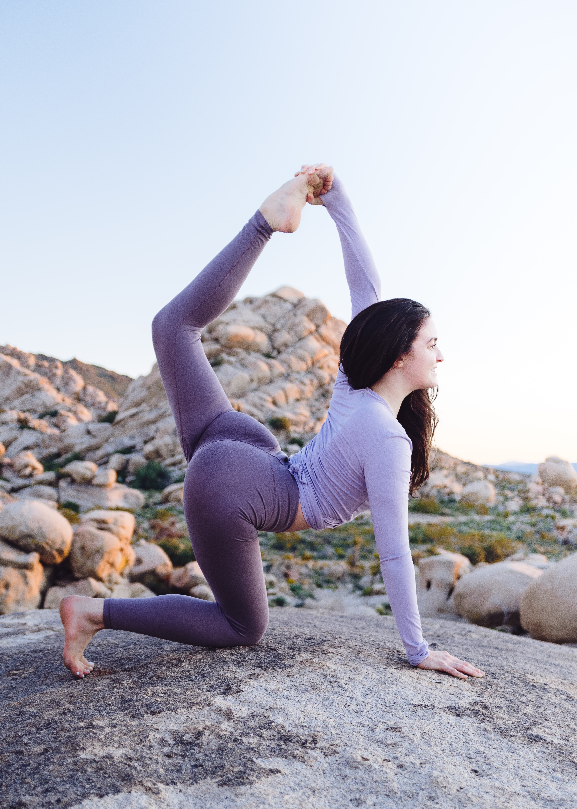

Йога вместо диета

Стройна фигура и гъвкавост
Стройната фигура обаче не е задължително гъвкава. С напредване на годините хрущялната тъкан се замества с калцификати,
това са втвърдени минерални вещества (калциеви соли и фосфати). Утаените соли се натрупват по мускулите и по кръвоносната система
Доказано е, че йогата укрепва еластичността и гъвкавостта на тялото. Упражненията поддържат младостта на тялото, но те трябва да се
дозират според възможностите и моментното състояние на човека.
Какъв е вашия тип?
Според Аюрведа има три основни конституционни типа, а от тяхната комбинация се получават седем подтипа
- Вата
- Питта
- Капха
- Вата-Питта
- Вата-Капха
- Питта-Капха
- Вата-Питта-Капха
С помощта на йога може да се уравновеси вроденият тип конституция, което дава добро здраве.
Типа Вата
Типа Вата (вятър) умствената и физическата енергия на тези хора бързо се променя.
Имат жив темперамент и са склонни да се увличат.
Тези хора са непрекъснато в движение, хранят се бързо и безразборно,
страдат от лошо храносмилане.
Имат интерес към всичко ново, бързо учат но бързо забравят.
Не понасят студ, шум и ветровито нреме.
Лесно губят контрол и сами си създават грижи и се терзаят.
За тези хора най-подходящи са йогийски комплекси за релаксация и медитация.
Йога комплекс за типа вата
Типа Пита
Типа Пита (огън) са честолюбиви, целеустремени, борбени не се подчиняват лесно, често избухливи без повод.
Притежават аналитичен ум, ораторска дарба и добра концентрация.
Не обичат да прахосват времето си.
Пита макар и уравновесени и спокойни хора могат лесно да бъдат извадени от равновесие отнатовареното и неподредено ежедневие.
Обмяната при тези хора е много добра. Предпочитат храни със сладък или горчив вкус, не обичат кисели храни.
За тези хора най-подходящи са йогийски комплекси с динамични виняси (поредица от пози между които няма почивка),
за да могат да изразходват прекомерната си огнена енергия.
Типа Капха
Типа Капха (Вода и земя) са спокойни, издръжливи, уравновесени, малко мудни.
Нуждаят се от повече време за да асимилират новите впечатления и знания, но имат добро памет и дълго помнят наученото.
Имат силна нужда от сигурност и безопасност, затова трупат пари и често разглеждат партньорите си като собственост, но нямат за цел да доминират. Тези хора най-добре е да се насочат
съм самоусъвършенстване чрез йога.
Добре е да си поставят цели и да ги реализират.
Типа Вата-Питта
Типа Вата-Пита са грациозни, подвижни, динамични и отзивчиви.
Имат ярко изразен интелест, обичат да говорят и са дружелюбни.
По-издръжливи са от типа Вата, по-търпеливи и по-стабилни.
Понасят по-добре студа от типа Вата.
Типа Вата-Капха
Типа Вата-Капха са стройни с плавни движения.
Притежават вътрешна стабилност и като цяло са уравновесени.
Предпочитат старите проверени образци пред нововъведенията.
Типа Питта-Капха
Типа Питта-Капха са мускулести и устойчиви, но са склонни към напълняване.
В случайте, които другите типове биха вдигнали ръце, тези хора продължават да се трудят и довеждат нещата докрай.
Тези хора обичат да работят редовна трудова дейност, с еднакъв ритъм и постоянство.
Като цяло имат добро здраве, големи съпротивителни сили.
Типа Вата-Питта-Капха
Това съчетание е идеалното за човека.
Всички жизнени сили са в равновесие и човек е с огромни съпротивителни сили.
Изваждането от равновесие може да стане само в екстремни условия.